Capítulo 4
AS INDÚSTRIAS E OS RECURSOS DA MATEMÁTICA FINACEIRA
CONTEXTUALIZANDOPara viabilizar a implantação de uma indústria, é necessário valer-se da Matemática financeira, que possibilita calcular, por exemplo, o custo, a receita e o lucro da indústria em função do número de peças produzidas. O custo mensal fixo de uma empresa é a soma dos gastos fixos e variáveis para produzir determinado produto e é calculado da seguinte forma: C(x) = CF + CV, onde CF é o custo fixo, CV é o custo variável que a empresa tem na produção e x é o número de peças produzidas. O cálculo da receita da empresa está ligado ao faturamento bruto da empresa, que depende do número de produtos vendidos. A fórmula que permite calcular a receita é R(x) = p.x, onde p é o preço de mercado do produto e x é o número de mercadorias vendidas. O lucro da empresa é calculado pela fórmula L(x) = R(x) – C(x) e, para que a empresa tenha lucro, é preciso que a receita seja maior do que o custo. Caso contrário, ela terá prejuízo. Um exemplo: Uma siderurgia fabrica pistões para montadoras de motores automotivos e o custo mensal fixo é de R$ 950,00 (incluindo os gastos com energia elétrica, água, impostos, salários, entre outros). O custo variável que depende do número de pistões produzidos é R$ 41,00 por unidade. Considerando que o valor de mercado de cada pistão é equivalente a R$120,00 pode-se calcular o custo total na venda de 1000 pistões e quantas peças, no mínimo, precisam ser vendidas para que a empresa tenha lucro da seguinte forma:
A partir da fórmula C(x) = CF + CV que permite calcular o custo total mensal em função do número de produtos vendidos, tem-se:
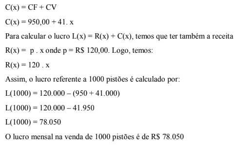Se a indústria quisesse ter um lucro mensal de R$ 315.050,00, quantos pistões ela deveria vender?
L(x) = 315.050,00
Para calcular x, substitui-se L(x) pela expressão analítica L(x) = R(x) + C(x)
R(x) – C(x) = 315.050
120 . x – (950 + 41x) = 315.050
Como a Matemática possibilita o controle e a projeção do lucro de uma empresa para implantá-la e viabilizá-la?
(RE)CONSTRUINDO CONHECIMENTOCaro aluno! Para responder a pergunta desse capítulo é importante conhecer conceitos de Matemática Financeira e os procedimentos matemáticos que viabilizam a aplicação desses conceitos.
RETOMANDO PARA PROSSEGUIR
O PERÍMETRO E A ÁREA DE FIGURAS PLANAS

AS EXPRESSÕES ALGÉBRICAS
Para estudar as expressões algébricas, observe a seguintes figuras geométricas, seus lados são letras que representam quantidades (a medida do comprimento dos lados da figura). Expresse o perímetro (P) e a área (A) de cada figura:


Acesse o vídeo clicando no link a seguir:
Se igualarmos uma expressão algébrica da forma 3x + 2 a um número qualquer, por exemplo, 3x + 2 = 8, a letra x terá um único valor. Ela não será mais uma variável pois não 28 pode assumir qualquer valor numérico. O x, na equação, é uma incógnita, cujo valor pode ser calculado, usando as operações inversas:
Observe a resolução da equação 3x + 2 = 8
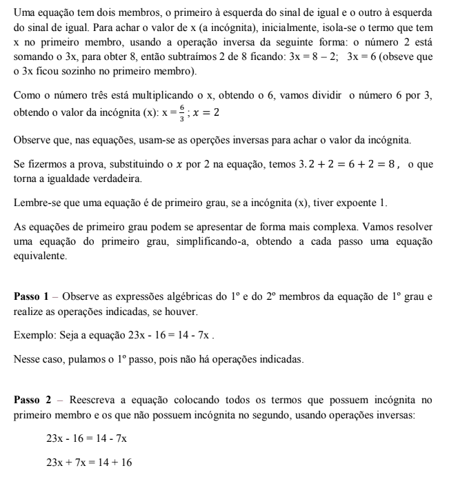 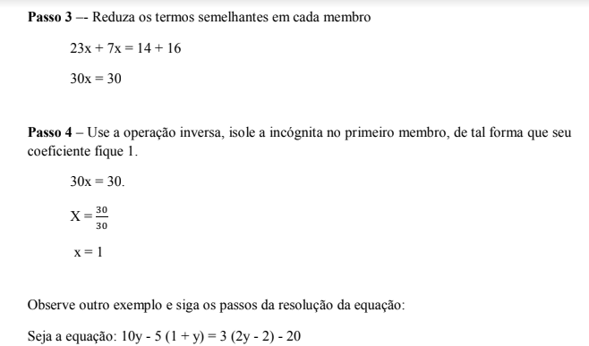 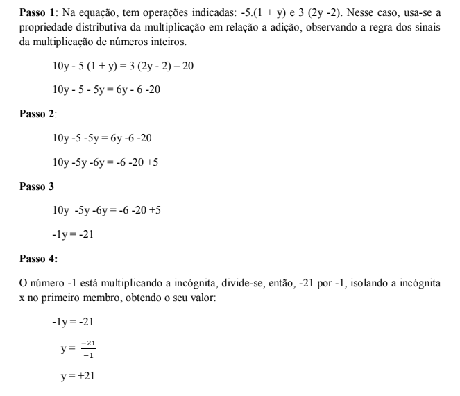 RESOLVENDO PROBLEMAS
RESOLVENDO PROBLEMAS


 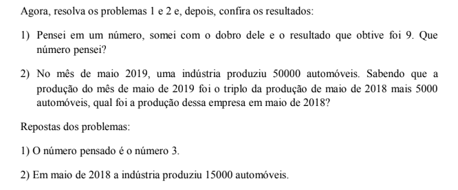
OS SISTEMAS DE PRIMEIRO GRAU
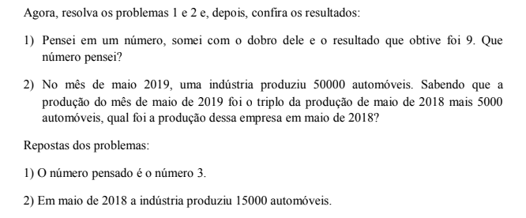
OS SISTEMAS DE PRIMEIRO GRAU
Vamos iniciar o estudo dos sistemas de equações, fazendo uma atividade prática com balanças.
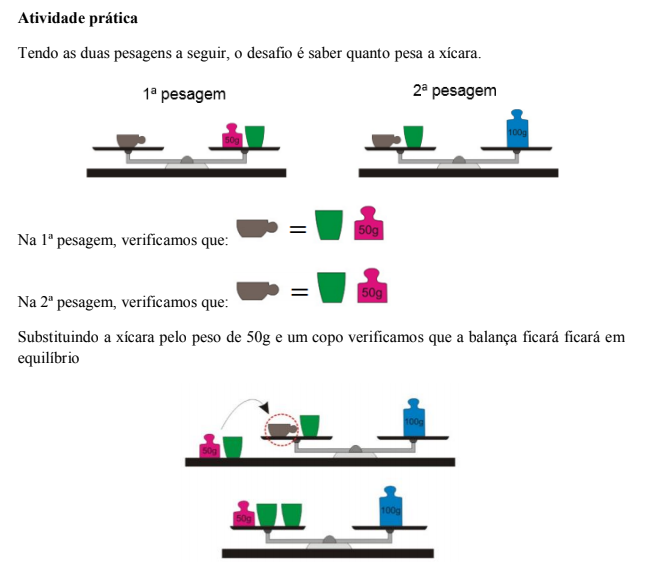
 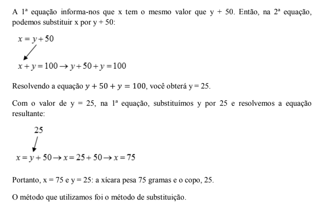
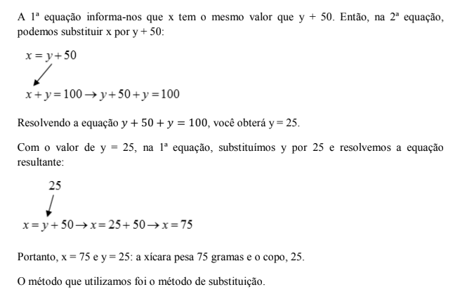
Um sistema de equações de 1o grau duas incógnitas é constituído por duas equações de 1o grau que apresentam mais de uma incógnita. Resolver um sistema de equações é encontrar os valores das incógnitas que satisfazem simultaneamente as duas equações.
Para resolver um problema que envolve um sistema de equações de 1o grau com duas incógnitas pelo método de substituição, usamos o seguinte passo a passo.
O problema: A soma da minha idade com a da minha filha é 44 anos Quando ele nasceu, eu tinha 28 anos, portanto a nossa diferença de idade é 28 anos. Qual é a minha idade e a idade da minha filha hoje?

 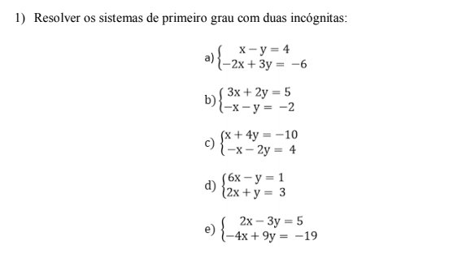
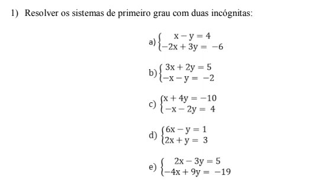

O QUE APRENDI
Nesse capítulo, aprendi que, para instalar e manter saudável uma indústria, é necessário projetá-la, valendo-se, entre outros, de recursos da Matemática Financeira, como por exemplo, fazer a projeção do número de produtos fabricados, considerando o custo fixo e o custo variável de produção e calcular o lucro total da empresa, tendo em vista o custo de mercado do produto. Trabalhei com expressões algébricas, com equações e sistemas de equações de primeiro grau e, aplicando esses conceitos na resolução de problemas, pude compreender que conceitos e procedimentos matemáticos são as ferramentas das quais a Matemática se vale para resolver problemas.